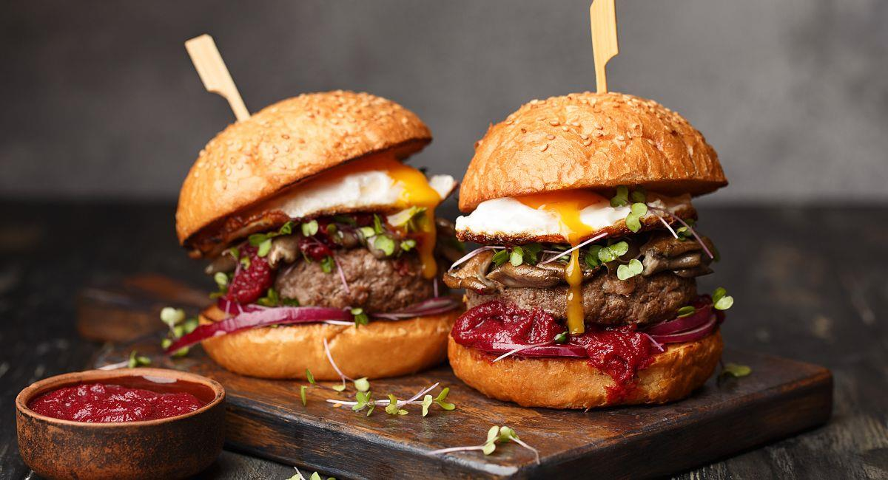

MISION
Ofrecer hamburguesas de alta calidad y sabor excepcional utilizando ingredientes frescos y locales, proporcionando una experiencia gastronómica única y satisfactoria para cada cliente en un ambiente acogedor y amigable

Ofrecer hamburguesas de alta calidad y sabor excepcional utilizando ingredientes frescos y locales, proporcionando una experiencia gastronómica única y satisfactoria para cada cliente en un ambiente acogedor y amigable
Ser la cadena de hamburguesas líder en el mercado, reconocida por nuestra innovación en recetas, compromiso con la sostenibilidad y dedicación al servicio al cliente, contribuyendo a la creación de comunidades más felices y saludables.

Utilizamos ingredientes frescos, de alta calidad y, preferiblemente, locales. Esto incluye carnes frescas, panes horneados diariamente, vegetales orgánicos y salsas hechas en casa. una variedad de opciones en el menú que atienden a diferentes gustos y necesidades dietéticas , incluyendo hamburguesas clásicas, opciones vegetarianas o veganas, y alternativas sin gluten y nos distinguimos por la creatividad en las recetas y presentaciones, introduciendo nuevas combinaciones de sabores o estilos de cocina que sorprenden y deleitan a los clientes.
